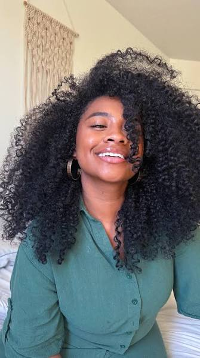
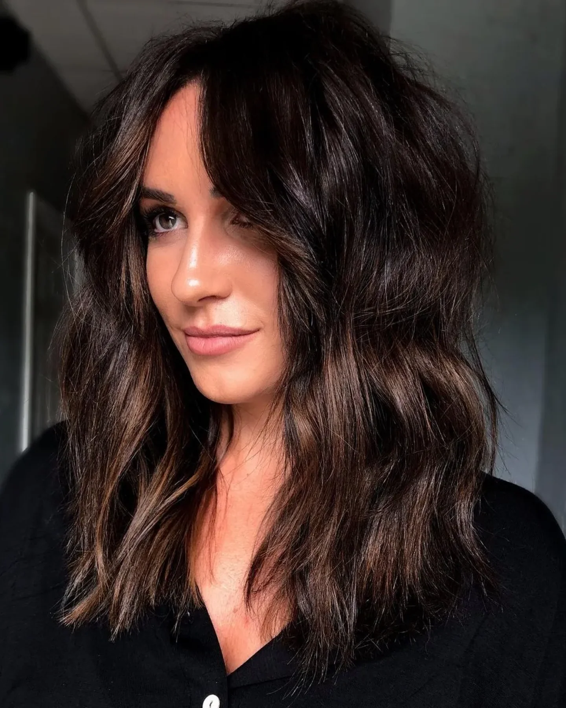

"My hair has never felt this soft. I noticed a difference after just two weeks of using the shampoo and conditioner together."
"I was skeptical at first but the hair growth results are real. My hairline has visibly filled in after a couple of months."

"Smells amazing and leaves my hair shiny without feeling greasy. Will definitely repurchase."

"My curls used to feel so dry and frizzy. Since switching to Black Beauty, my hair stays bouncy and defined all day."

"This helped reduce my hair fall in just a few weeks without drying out my scalp"

"Leaves my hair super smooth and easy to detangle every single wash."
A simple weekly routine using Black Beauty products to keep your hair looking salon-fresh all week long.
Read MoreWhat actually causes hair thinning, and how the ingredients in Black Beauty target it at the root.
Read MorePractical styling habits and moisture-locking tips to keep your strands smooth and sleek no matter the forecast.
Read MoreWhy a balanced scalp is the foundation for stronger growth, and how to cleanse buildup without stripping natural oils.
Read MoreQuick, low-effort routines to protect your hair while you sleep and refresh your look in minutes the next morning.
Read MoreA roundup of before-and-after stories from customers who've made Black Beauty part of their routine.
Read More